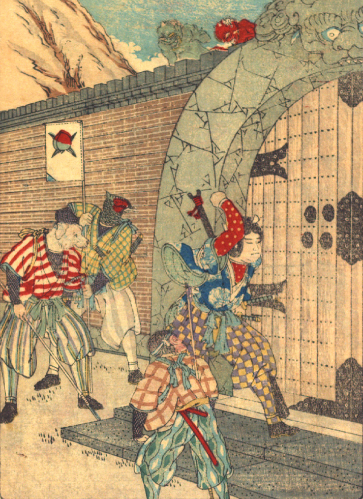

鬼の住処に入ろうとする桃太郎一行。門の扉を桃太郎が叩こうとしており、その後ろに猿、犬、雉が控えている。雉は旗を掲げている。塀の上から2体の鬼が、彼らの様子をうかがっている。
著作者：David Thompson／出典：親書誌：U426_nichibunken_0116：Momotaro／日付：2006／資源識別子：U426_nichibunken_0116_0003_0000
Copyright (c)2010- International Research Center for Japanese Studies, Kyoto, Japan. All rights reserved.